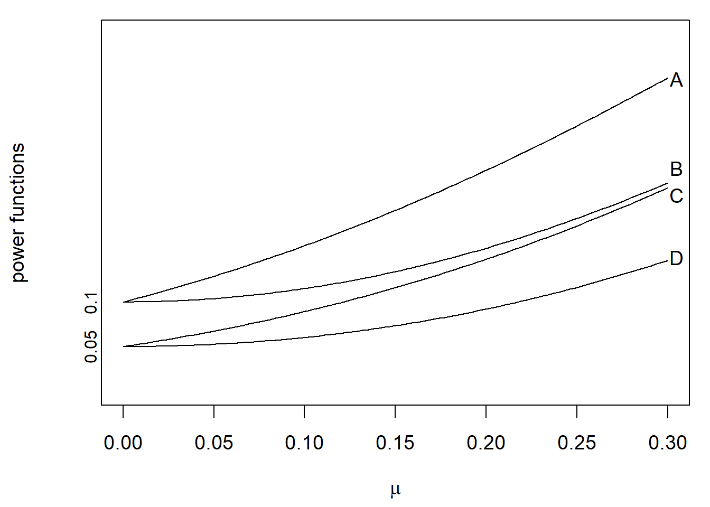

第 7 章 综合练习
7.1 2018秋季试卷
Part I: Each problem is worth 3 points.
Let \(X_1,X_2,\dots,X_6\) be a simple random sample taken from \(N(0,2^2)\). Denote \[Y = (X_1+X_2)^2+(X_3+X_4)^2+(X_5+X_6)^2.\] If \(kY\sim \chi^2(3)\), then \(k=\)___?
Let \(X_1,X_2,X_3\) be a simple random sample taken from \(N(\mu,\sigma^2)\). If \(\hat\mu = \frac{1}{2} X_1+cX_2+\frac{1}{6}X_3\) is an unibased estimate of \(\mu\), then \(c=\)___?
Let \(X_1,X_2,X_3\) be a simple random sample taken from \(B(1,p)\). For testing the hypothesis \(H_0:p=1/2\ vs.\ H_1:p=3/4\), we use a rejection region: \[W=\{(x_1,x_2,x_3):x_1+x_2+x_3\ge 2\}.\] The power of the test is ___?
Let \(X_1,\dots,X_n\) be a simple random sample taken from \(N(\mu,1)\), and let \(S_n^2=\frac 1n\sum_{i=1}^n(X_i-\bar X)^2\) be the sample variance. Then \(Var[S_n^2]=\)___?
If the usual \(95\%\) confidence interval for the mean of normal population was \([0.12,0.22]\), the method of moments estimate of the mean would be ___?
Part II: Multiple Choice Problems (one or more than one items may be true). Each problem is worth 3 points.
- The parameters \(\theta,\lambda,\alpha,\beta\) are unknown in the following densities. Which of the following probability distributions belong to the exponential family? ( )
A. \(f(x;\theta,\lambda) = \frac \theta\lambda\left(\frac{x}{\lambda}\right)^{\theta-1}e^{-(x/\lambda)^\theta}1\{x> 0\}\)
B. \(f(x;\alpha,\beta) = \frac{\Gamma(\alpha+\beta)}{\Gamma(\alpha)\Gamma(\beta)}x^{\alpha-1}(1-x)^{\beta-1}1\{0<x<1\}\), where \(\Gamma(\cdot)\) is the gamma function.
C. \(f(x;\lambda) = \frac{\lambda^\alpha}{\Gamma(\alpha)}x^{\alpha-1}e^{-\lambda x}1\{x> 0\}\)
D. \(f(x;\theta) = \frac{2}{\sqrt{2\pi}}e^{-\frac{(x-\theta)^2}{2}}1\{x\ge \theta\}\)
- Let \(X_1,\dots,X_n\) be the simple random sample taken from the normal distribution \(N(\mu,\sigma^2)\), where \(\mu,\sigma^2\) are unknown parameters. Which of the following are sufficient statistics for \(\theta=(\mu,\sigma^2)\)? ( )
A. \(T_1 = (X_1,\dots,X_n)\)
B. \(T_2 = (\sum_{i=1}^n X_i,\sum_{i=1}^n X_i^2)\)
C. \(T_3 = (\sum_{i=1}^n |X_i|,\sum_{i=1}^n X_i^2)\)
D. \(T_4 = \frac{1}{n}\sum_{i=1}^n X_i\)
- Which of the following statements are true? ( )
A. If the \(p\)-value is 0.05, the corresponding test will be rejected at the significance level 0.03.
B. If a test rejects at significance level 0.05, then the \(p\)-value is less than or equal to 0.05.
C. If the significance level of a test is decreased, the power of the test would be expected to decrease.
D. A type II error occurs when the test statistic falls in the rejection region of the test and the null is true.
- Let \(\hat\beta_0,\hat\beta_1\) be the least squares etstimators for the simple linear model \(y_i = \beta_0+\beta_1x_i+\epsilon_i,\ i=1,\dots,n\), where \(\epsilon_i\stackrel{iid}{\sim} N(0,\sigma^2)\). Which of the following statements are true? ( )
A. \(\hat\beta_0\) and \(\hat\beta_1\) are independent.
B. \(\hat\beta_0-\hat\beta_1\) is normally distributed.
C. The more spread out the \(x_i\) are the better we can estimate the slope \(\beta_1\).
D. \(\bar y = \hat\beta_0+\hat\beta_1 \bar x\), where \(\bar x = \frac 1 n\sum_{i=1}^n x_i,\ \bar y = \frac 1 n\sum_{i=1}^n y_i\).
- Let \(X_1,\dots,X_n\) be a simple random sample taken from \(N(2,3^2)\), and let \(\bar X\) be the sample mean. Which of the following are true? ( )
A. \(\frac{\bar X -2}{3/\sqrt{n}}\sim t(n)\)
B. \(\frac 1 9\sum_{i=1}^n (X_i-2)^2\sim F(n,1)\)
C. \(\frac{\bar X-2}{\sqrt{3}/\sqrt{n}}\sim N(0,1)\)
D. \(\frac 1 9\sum_{i=1}^n(X_i-2)^2\sim \chi^2(n)\)
Part III. (15 points)
Let \(X_1,\dots,X_n\) be a simple random sample taken from the density
\[f(x;\theta)=\frac{2x}{\theta^2},\quad 0\le x\le \theta.\]
Find an expression for \(\hat\theta_L\), the maximum likelihood estimator (MLE) for \(\theta\).
Find an expression for \(\hat\theta_M\), the method of moments estimator for \(\theta\).
For the two estimators \(\hat\theta_L\) and \(\hat\theta_M\), which one is more efficient in terms of mean squared error (MSE)?
Part IV. (10 points)
Let \(X_1,\dots,X_n\) be a simple random sample taken from an exponential distribution \(Exp(\lambda)\), whose density is given by \[f(x;\lambda) = \lambda e^{-\lambda x}1\{x\ge 0\},\ \lambda>0.\] Derive a likelihood ratio test of the hypothesis \[H_0:\lambda=1\ vs.\ H_1:\lambda=2.\] What is the definition of uniformly most powerful (UMP)? Is the test UMP against the alternative \(H_1:\lambda>1\)?
Part V. (10 points)
A medical researcher believes that women typically have lower serum cholesterol (血清胆固醇) than men. To test this hypothesis, he took a sample of 476 men between the ages of nineteen and forty-four and found their mean serum cholesterol to be 189.0 mg/dl with a sample standard deviation of 34.2. A group of 592 women in the same age range averaged 177.2 mg/dl and had a sample standard deviation of 33.3. Is the lower average for the women statistically significant? Set the significant level \(\alpha\) =0.05. What assumptions are made when conducting the test? (\(u_{0.95}=1.644854\), \(t_{0.95}(1066)=1.646284\), \(t_{0.95}(1068)=1.646282\), \(u_{0.975}=1.959964\), \(t_{0.975}(1066)=1.962192\), \(t_{0.975}(1068)=1.962188\))
Part VI. (10 points)
Let \(X_1,\dots,X_n\) be a simple random sample taken from the uniform distribution \(U(\theta,0)\), where \(\theta<0\).
(a). Derive a \(100(1-\alpha)\%\) confidence interval for \(\theta\).
(b). There is a duality between confidence intervals and hypothesis tests. Use the result in part (a) to derive a test at significant level \(\alpha\) of the hypothesis \[H_0: \theta = \theta_0\ vs.\ H_1:\theta \neq \theta_0,\] where \(\theta_0<0\) is fixed.
Part VII. (10 points)
Consider the linear model \[y_i=\beta_0+\beta_1x_i+\epsilon_i,\ \epsilon_i\stackrel{iid}{\sim} N(0,\sigma^2),\ i=1,\dots,n.\] Suppose that all the fixed \(x_i\) are not equal and \(n\ge 3\).
(a). Derive a maximum likelihood estimator (MLE) \(\hat\sigma_L^2\) for \(\sigma^2\).
(b). Let \(T_k=k\hat\sigma_L^2\) be an estimate of \(\sigma^2\). Find a \(k\in \mathbb{R}\) such that \(T_k\) is an unbiased estimate of \(\sigma^2\). Show that the unbiased estimate is not the optimal choice by taking account of mean squared error (MSE), and the most efficient \(T_k\) takes place at \(k=1\), i.e., the MLE \(\hat\sigma_L^2\).
Part VIII. (15 points)
Consider the multiple linear regression model \[y_i = \beta_0+\beta_1 x_{i1}+\beta_2x_{i2}+\dots+\beta_{p-1}x_{i,p-1} +\epsilon_i,\] where \(i=1,\dots,n\) and \(n>p\ge 2\).
(a). Find the least squares estimates (LSE) of \(\beta_0,\dots,\beta_{p-1}\) via the matrix formalism. What assumptions are required for ensuring a unique solution of the LSE?
(b). Show that the the residuals sum to zero. Are the standard assumptions of \(E[\epsilon_i]=0\) for \(i=1,\dots,n\) required to establish the statement?
(c). Suppose that \(\epsilon_i\stackrel{iid}{\sim} N(0,\sigma^2)\), where \(\sigma>0\) is an unknown parameter. Define \(\alpha = \sum_{i=1}^{p-1} \beta_i^2\). Use the generalized likelihood ratio method to test the hypothesis
\[H_0: \alpha = 0\ vs.\ H_1:\alpha>0.\] If the coefficient of determination \(R^2=0.95\), \(p = 3\) and \(n=13\), is the null rejected at the significant level \(\alpha =0.05\)? (\(F_{0.95}(2,10)=4.10,F_{0.95}(3,10)=3.71,t_{0.95}(10)=1.81\))
7.2 2018秋季试卷答案
Part I:
- 1/8
- 1/3
- 27/32
- \(2(n-1)/n^2\)
- 0.17
Part II:
- BC
- AB
- BC
- BCD
- D
Part III:
- The likelihood function is
\[L(\theta) = \prod_{i=1}^n f(x_i;\theta) = \frac{2^n}{\theta^n}\left(\prod_{i=1}^n x_i\right) 1\{x_{(n)}\le \theta\}.\]
To maximize \(L(\theta)\), we need to choose \(\theta\ge x_{(n)}\) so that \(L(\theta) = A\theta^{-n}\), where \(A=2^n\prod_{i=1}^n x_i\) does not depend on \(\theta\). So the MLE is \(\hat\theta_L = X_{(n)}\).
- First, compute the first order moment:
\[E[X] = \int_0^\theta xf(x;\theta)dx = \int_0^\theta \frac{2x^2}{\theta^2}dx=\frac{2\theta}{3}.\]
This implies that \(\theta = 3E[X]/2\). The method of moments estimator \(\hat\theta_M=3\bar X/2\).
- The density for \(X_{(n)}\) is given by
\[f_{X_{(n)}}(x;\theta) = nF^{n-1}(x)f(x;\theta)=n\frac{x^{2(n-1)}}{\theta^{2(n-1)}}\frac{2x}{\theta^2}=\frac{2nx^{2n-1}}{\theta^{2n}},\quad 0\le x\le \theta.\]
The first and second order moments for \(X_{(n)}\) are
\[E[X_{(n)}] = \int_0^\theta \frac{2nx^{2n}}{\theta^{2n}}dx = \frac{2n\theta}{2n+1},\]
\[E[X_{(n)}^2] = \int_0^\theta \frac{2nx^{2n+1}}{\theta^{2n}}dx = \frac{n\theta^2}{n+1}.\]
The MSE for \(\hat\theta_L\) is given by
\[\begin{align*} MSE(\hat\theta_L)&=E[(\hat\theta_L-\theta)^2]=E[X_{(n)}^2]-2\theta E[X_{(n)}]+\theta^2\\ &=\frac{n\theta^2}{n+1}-\frac{4n\theta^2}{2n+1}+\theta^2\\ &=\frac{\theta^2}{(n+1)(2n+1)}. \end{align*}\]
The second order moment for \(X\) is
\[E[X^2] = \int_{0}^\theta \frac{2x^3}{\theta^2}dx=\frac{\theta^2}{2}.\]
The MSE for \(\hat\theta_M\) is given by
\[\begin{align*} MSE(\hat\theta_M)&=Var[\hat\theta_M]=\frac{9Var[X]}{4n}\\ &=\frac{9}{4n}(E[X^2]-E[X]^2)\\ &=\frac{9}{4n}\left(\frac{\theta^2}{2}-\frac{4\theta^2}{9}\right)= \frac{\theta^2}{8n}. \end{align*}\]
It is easy to see that when \(n\ge 3\), \(MSE(\hat\theta_L)<MSE(\hat\theta_M)\); otherwise, \(MSE(\hat\theta_L)>MSE(\hat\theta_M)\).
Part IV:
The likelihood function is
\[L(\lambda)=\prod_{i=1}^n (\lambda e^{-\lambda x_i}) = \lambda^ne^{-\lambda n\bar x}.\]
The likelihood ratio is given by
\[\lambda(\vec x)= \frac{L(2)}{L(1)}=\frac{2^ne^{-2 n\bar x}}{e^{- n\bar x}}=2^ne^{-n\bar x}.\]
Choose the test statistic \(T(\vec x) = 2n\bar x\). When \(\lambda=1\), \(T(\vec X)\sim \chi^2(2n)\). Also, \(\lambda(\vec x) = 2^ne^{-T(\vec x)/2}.\) The rejection region is of the form \(W=\{T(\vec x)<C\}\). We thus have \(C=\chi_{\alpha}^2(2n)\).
A rejection region \(W\) is said to be UMP if for any rejection region \(W'\) with the type I error probability no more than \(\alpha\), the power of the test associated with \(W'\) is no larger than that of the rejection region \(W\).
Consider the test of the hypothesis
\[H_0:\lambda=1\ vs.\ H_1:\lambda=\lambda_0>1.\] Following the same procedure above, the likelihood ratio test gives the same rejection region W. So the test derived before is also UMP for the alternative \(H_1:\lambda>1\) by using the N-P lemma.
Part V:
Let \(X_i\) be the serum cholesterol for men, \(i=1,\dots,n=476\), let \(Y_j\) be the serum cholesterol for women, \(j=1,\dots,m=592\). We now have \(\bar x = 189.0\), \(s_{1n}=34.2\), \(\bar y = 177.2\), \(s_{2m}=33.3\). Suppose that \(X_i\stackrel{iid}{\sim} N(\mu_1,\sigma^2)\) and \(Y_i\stackrel{iid}{\sim} N(\mu_2,\sigma^2)\). We are testing
\[H_0:\mu_1\le \mu_2,\ vs.\ H_1:\mu_1>\mu_2.\]
We use the t-test. The test statistic is
\[T = \frac{\bar X-\bar Y}{S_w\sqrt{\frac 1 n+\frac 1 m}},\] where \(S_w^2 = (nS_{1n}^2+mS_{2m}^2)/(n+m-2)\). The rejection region is given by \(W = \{T>t_{1-\alpha}(n+m-2)\}\). The observed test statistic is
\[t=\frac{189.0-177.2}{33.74\sqrt{\frac 1 {476}+\frac 1 {592}}}=5.68>t_{0.95}(1066)=1.65.\]
We therefore reject the null. The lower average for the women is statistically significant.
The assumptions are
- normally distributed for both groups
- the two grouds are independent
- their variances are the same
Part VI:
Let \(G = X_{(1)}/\theta\). The CDF for \(G\) is given by
\[\begin{align*} F_G(x) &= P(G\le x) = P(X_{(1)}/\theta\le x) \\ &= P(X_{(1)}\ge \theta x) \\ &= \prod_{i=1}^nP(X_i\ge \theta x) \\ &= x^n,\ 0< x< 1. \end{align*}\]
Let \(a,b\in \mathbb{R}\) such that \(P(a\le G\le b)=1-\alpha\). Then the CI for \(\theta\) is
\[CI=\left[\frac{X_{(1)}}{a},\frac{X_{(1)}}{b}\right].\]
For simplicity, we take \(a,b\) such that \(P(G\le a) = P(G\ge b) = \alpha/2\). This implies \(a = (\alpha/2)^{1/n},\ b= (1-\alpha/2)^{1/n}\).
Or you can take \(P(G\le a) = \alpha,P(G\le b)=1\) so that \(a=\alpha^{1/n}, b=1\).
You can also other statistics, such as \(G=-2\log(\sum_{i=1}^n X_i/\theta)\). The answer is not unique.
Form part (a), we have
\[P_{\theta}\left(\theta\in CI\right) = 1-\alpha\ \forall\theta<0.\]
We therefore choose the rejection region
\[W = \{\theta_0\notin CI\}.\]
It is easy to see that \(P_{\theta_0}(\theta_0\notin CI) = \alpha\).
Part VII:
It is easy to see that
\[\hat\sigma_L^2=\frac{S_e^2}{n},\]
where \(S_e^2 = \sum_{i=1}^n(y_i-\hat\beta_0-\hat\beta_1x_i)^2\), and \(\hat\beta_0,\hat\beta_1\) are the LSE for \(\beta_0,\beta_1\). It is known that \(S_e^2/\sigma^2\sim \chi^2(n-2)\). This gives \(E[S_e^2]=(n-2)\sigma^2\) and \(Var[S_e^2] = 2(n-2)\sigma^4\).
As a result, \(E[T_k] = kE[S_e^2/n]=\frac{k(n-2)}{n}\sigma^2\). If \(T_k\) is unbiased, then \(k = n/(n-2)\). On the other hand,
\[Var[T_k] = \frac{k^2}{n^2}Var[S_e^2] = \frac{2(n-2)k^2}{n^2}\sigma^4.\]
The MSE of \(T_k\) is given by
\[\begin{align*} M(k) &= E[(T_k-\sigma^2)^2] = (E[T_k]-\sigma^2)^2+Var[T_k]\\ &=\frac{(n-2)(k-1)^2+2}{n}\sigma^4 \end{align*}\]
whose minimum takes place at \(k=1\).
Part VIII:
(a). \(Y=X\beta\), the LSE is \(\hat\beta = (X^\top X)^{-1} X^\top Y\). It is requried that that \(\text{rank} (X) = p\).
(b). \(\hat\epsilon = Y-X\hat \beta = Y-X(X^\top X)^{-1} X^\top Y=(I_n-P)Y\)
\[\hat \epsilon^\top X = Y^\top (I_n-P)X = 0.\]
As a result, we have \(\hat \epsilon^\top 1 = \sum_{i=1}^n \hat\epsilon_i=0\). We do not require any assumption on \(\epsilon_i\).
(C). The test statistic is
\[\begin{align*} F &=\frac{S_R^2/(p-1)}{S_e^2/(n-p)}=\frac{R^2/(p-1)}{(1-R^2)/(n-p)}\\ &=\frac{0.95/2}{(1-0.95)/10}=95>F_{0.95}(2,10)=4.1. \end{align*}\]
We therefore reject the null.
7.3 2019春季试卷
Part I: Each problem is worth 3 points.
Let \(X_1,\dots,X_{10}\) be i.i.d. sample of \(X\sim \text{Exp}(1)\). If \(2\sum_{i=1}^{10} X_i\sim \chi^2(k)\), then the value of \(k\) is __________
What is the definition of Type I error?_______________________________
Let \(T\sim t(10)\). It is known that \(P(T\le 1.8)=0.95\). Then \(F_{0.9}(1,10)=\)___________
If the \(95\%\) confidence interval for the mean of a normally distributed population with known variance is \([1.2, 1.4]\) based on a sample of size \(100\), how much larger a sample do you think you would need to halve the length of the confidence interval （该置信区间长度减半需要增加多少样本）? ____________
Show one advantage of the maximum likelihood method compared to the method of moments. ___________________________
Part II: Multiple-Choice Problems (ONLY one of the items is true). Each problem is worth 3 points.
- Let \(X_1,\dots,X_n\) be i.i.d. sample of \(X\sim N(\mu,\sigma^2)\), where \(\mu,\sigma\) are unknown parameters. Which one of the following is NOT a statistic. ( )
A. \(X_1+X_2+\dots+X_n\)
B. \(X_{(1)} = \min\{X_1,X_2,\dots,X_n\}\)
C. \(\frac{\bar X-\mu}{\sigma/\sqrt{n}}\)
D. \(g(\bar X)\), where \(g(\cdot)\) is a given function over \(\mathbb{R}\).
- Consider the problem of testing
\[H_0:\mu=0\ vs.\ H_1:\mu>0.\]
The power functions of four rejection regions are plotted below. Which one might be the uniformly most powerful (UMP) rejection region at the significance level \(\alpha = 0.05\)? ( )

- Let \(X_1,\dots,X_n\) \((n\ge 3)\) be a smple of a Weibull population with denstiy
\[f(x;k,\lambda)=\frac k\lambda\left(\frac{x}{\lambda}\right)^{k-1}e^{-(x/\lambda)^k}1\{x> 0\},\]
where \(k>0,\lambda>0\) are unknown parameters. Which of following is a sufficient statistic for \(\theta=(k,\lambda)\)? ( )
A. \(T_1 = (X_1,\dots, X_n)\)
B. \(T_2 = \prod_{i=1}^n X_i\)
C. \(T_3 = \sum_{i=1}^n X_i^k\)
D. \(T_4 = (\sum_{i=1}^n X_i^k, \prod_{i=1}^n X_i)\)
- Let \(\hat\beta_0,\hat\beta_1,\hat\beta_2\) be the least squares estimators for the multiple linear model
\[y_i = \beta_0+\beta_1x_{i1}+\beta_2x_{i2}+\epsilon_i,\]
where \(\epsilon_i\stackrel{iid}{\sim}N(0,\sigma^2)\), \(i=1,\dots,n\). Which of the following statements is NOT true? ( )
A. The estimators \(\hat\beta_0,\hat\beta_1,\hat\beta_2\) are normally distributed.
B. The estimators \(\hat\beta_0,\hat\beta_1,\hat\beta_2\) are independent.
C. \(\mathbb{E}[\hat\beta_i] = \beta_i,\ i=0,1,2\).
D. \(\hat\beta_0-\hat\beta_1\) is normally distributed.
- Consider the multiple linear model \(Y = X\beta +\epsilon\), where \(X\) is the \(n\times p\) design matrix, \(\beta\) is a vector of \(p\) parameters, and the error \(\epsilon\sim N(0,\sigma^2 I_n)\). Let \(\hat\beta\) be the least squares estimate of \(\beta\), \(\hat Y = X\hat\beta\), \(\hat\epsilon = Y-\hat Y\), and \(S_e^2 = ||\hat\epsilon||^2=\sum_{i=1}^n \hat\epsilon_i^2\). Which of following statements is true? ( )
A. \(\frac{S_e^2}{\sigma^2}\sim \chi^2(n)\)
B. \(S_e^2\) is independent of the length of \(\hat\beta\), i.e., \(||\hat\beta||\).
C. \(\hat\beta\sim N(\beta,\sigma^2 X^\top X)\)
D. \(\sqrt{S_e^2/(n-p)}\) is an unbiased estimate of \(\sigma\).
Part III. (15 points)
Let \(X_1,\dots,X_n\) be i.i.d. sample of \(X\sim N(\mu,\sigma^2)\), where \(\mu\in\mathbb{R}\) and \(\sigma>0\).
If \(\sigma\) is known, find a \(1-\alpha\) confidence interval (CI) for \(\mu\).
If \(\sigma\) is unknown, find a \(1-\alpha\) CI for \(\mu\).
Would you use the CI established in Part (b) if you were able to get the value of \(\sigma\)? Why?
Part IV. (10 points)
For a random sample of size \(n\) from a population \(X\), consider the following as an estimate of \(\theta=\mathbb{E}[X]\):
\[\hat\theta = \sum_{i=1}^n c_i X_i,\]
where \(c_i\) are fixed numbers and \(X_1,\dots,X_n\) is i.i.d. sample.
Find a condition on the \(c_i\) such that the estimate is unbiased.
Show that the choice of \(c_i\) that minimizes the mean squared errors (MSEs) of the estimate subject to the condition in Part (a) is \(c_i = 1/n\), where \(i=1,\dots,n\).
Part V. (10 points)
Suppose that \(X\) is a discrete random variable with \[P(X=1) = (1-\theta)^2,\ P(X=2) = 2\theta(1-\theta),\ P(X=3)=\theta^2,\] where \(\theta\in(0,1)\). Now a total of \(100\) independent observations of \(X\) are made with the following frequencies:
| Case | \(X=1\) | \(X=2\) | \(X=3\) |
|---|---|---|---|
| Frequency | 70 | 10 | 20 |
What is the maximum likelihood estimate of \(\theta\)?
Part VI. (10 points)
Write down the Neyman-Pearson (N-P) Lemma and prove it.
Part VII. (10 points)
There are 37 blood alcohol determinations made by Analyzer GTE-10, a three-year-old unit that may be in need of recalibration （校准）. All 37 measurements were made using a test sample on which a properly adjusted machine would give a reading of \(12.6\%\). Based on the data, the sample mean \(\bar x = 12.7\%\) and the sample standard deviation \(s = 0.6\%\). (\(t_{0.975}(36)=2.028, t_{0.975}(37)=2.026, t_{0.95}(36)=1.688, t_{0.95}(37)=1.687, u_{0.975}=1.960, u_{0.95}=1.645\))
Would you recommend that the machine should be readjusted （重新调整） at the level of significance \(\alpha = 0.05\)?
What is the p-value of your test? (Suppose that the CDFs of the standard normal, t, \(\chi^2\), F distributions are known. You can use them whenever you need.)
What assumptions are made when conducting the test?
Part VIII. (15 points)
Suppose that in the model
\[y_i= \beta_0+\beta_1x_i+\epsilon_i,\ i=1,\dots,n,\]
the errors \(\epsilon_i\) have mean zero and are uncorrelated, but \(\mathrm{Var}(\epsilon_i) = \rho_i^2\sigma^2\), where the \(\rho_i>0\) are known constants, so the errors do not have equal vairance. Because the variances are not equal, the theory developed in our class does not apply.
Try to transform suitably the model such that the basic assumptions (i.e., the errors have zero mean and equal variance, and are uncorrelated) of the standard statistical model are satisfied.
Find the least squares estimates of \(\beta_0\) and \(\beta_1\) for the transformed model.
Find the variances of the estimates of Part (b).